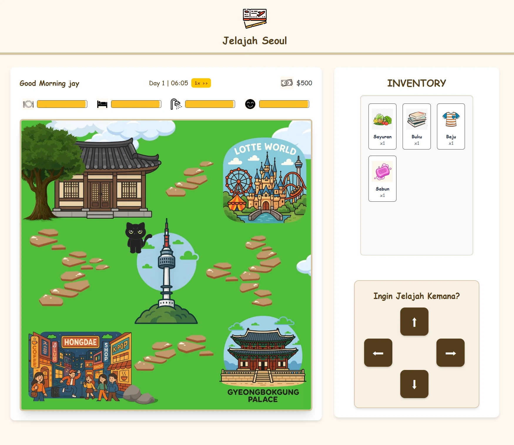
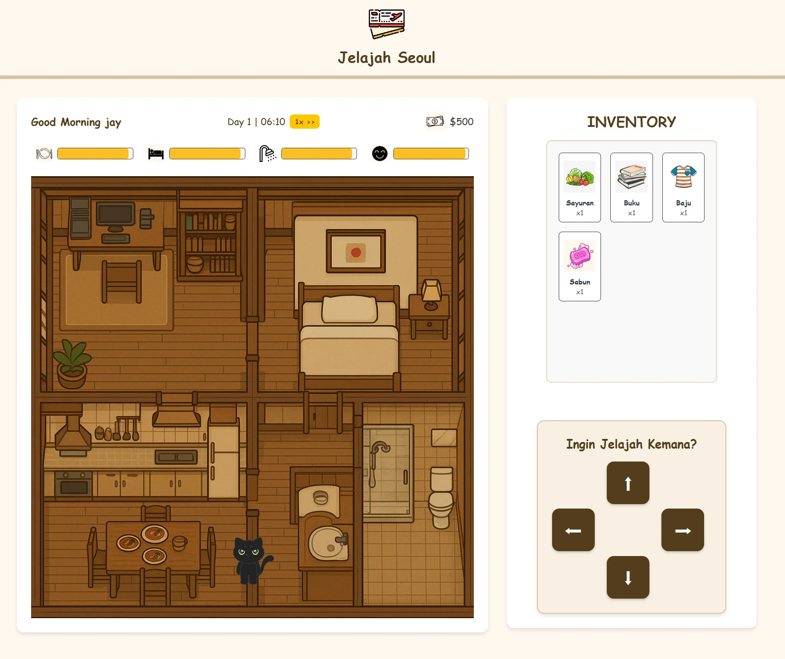
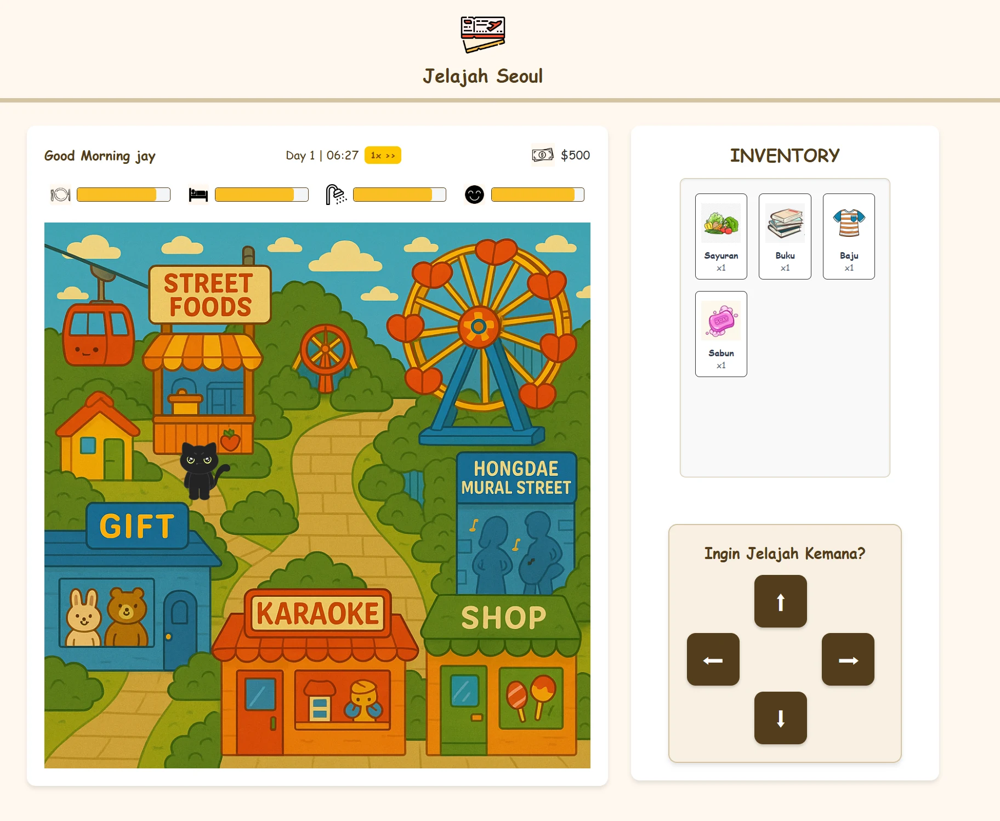
Hanna Pauline Haryono · Mahasiswa Informatika
Saya mahasiswa Informatika semester 5 yang sedang mencari kesempatan magang di bidang pengembangan web. Portofolio ini memuat proyek yang saya kerjakan selama perkuliahan dan kepanitiaan, mulai dari sistem informasi gereja dan situs acara mahasiswa hingga aplikasi Android dan gim.



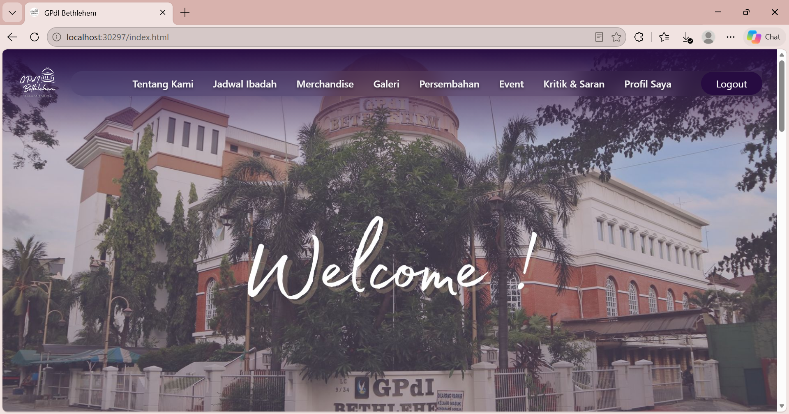
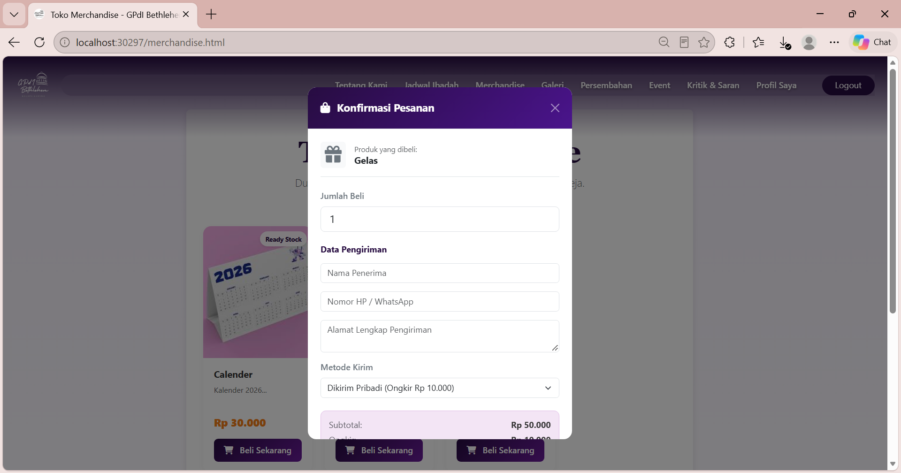
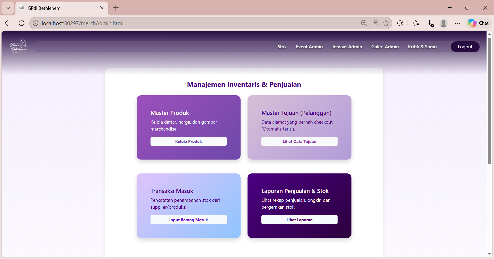
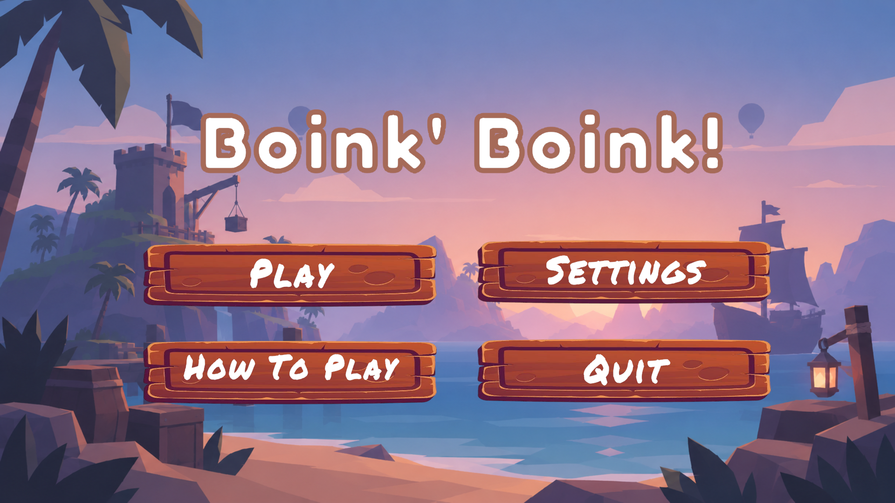
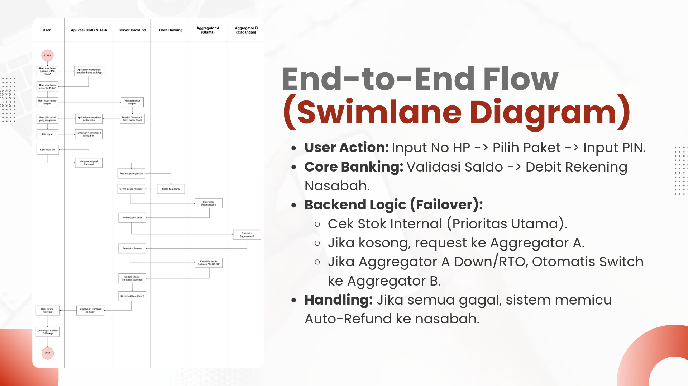
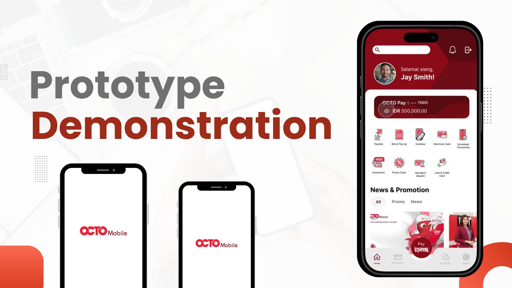
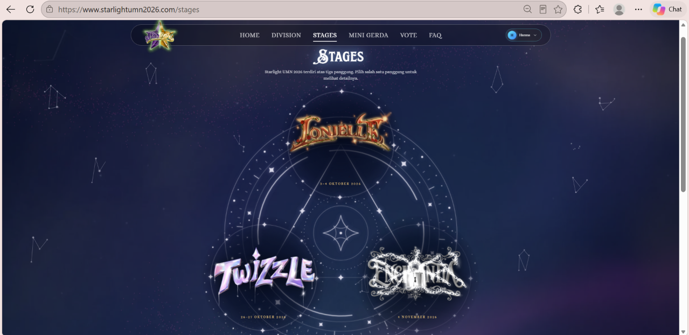
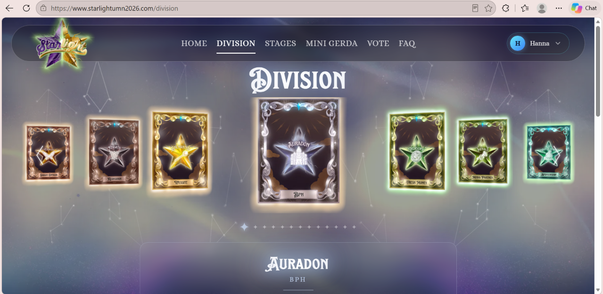
Saya mahasiswa Informatika semester 5. Saya suka mengubah desain menjadi halaman yang bisa dipakai, dan memastikan tampilannya tetap rapi di layar besar maupun ponsel.
Lewat proyek pengabdian masyarakat, saya belajar bahwa website yang baik dimulai dari memahami apa yang dibutuhkan penggunanya. Saya mencari magang untuk belajar bekerja dengan klien dan tim dalam proyek website sungguhan.
Silakan hubungi saya lewat email atau LinkedIn. CV lengkap bisa saya kirim kalau diminta.